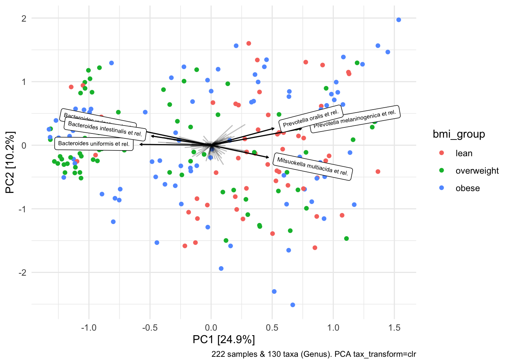

6 Ordination Plots
6.1 Ordination with auto caption
library(microViz)
# perform ordination
psextra_clr_dietswap %>%
ord_calc(method = "PCA") %>%
ord_plot(
plot_taxa = 1:6, colour = "bmi_group", size = 1.5,
tax_vec_length = 0.325,
tax_lab_style = tax_lab_style(max_angle = 90, aspect_ratio = 0.5),
auto_caption = 8
)
6.2 Customizing an ordination plot
library(ggplot2)
# customise plot
psextra_clr_dietswap %>%
ord_calc(method = "PCA") %>%
ord_plot(
plot_taxa = 1:6, colour = "bmi_group", size = 1.5,
tax_vec_length = 0.325,
tax_lab_style = tax_lab_style(max_angle = 90, aspect_ratio = 0.5),
auto_caption = 8) +
stat_ellipse(aes(linetype = bmi_group, colour = bmi_group), linewidth = 0.3) + # linewidth not size, since ggplot 3.4.0
scale_colour_brewer(palette = "Set1") +
theme(legend.position = "right") +
coord_fixed(ratio = 0.5, clip = "off") # makes rotated labels align correctly